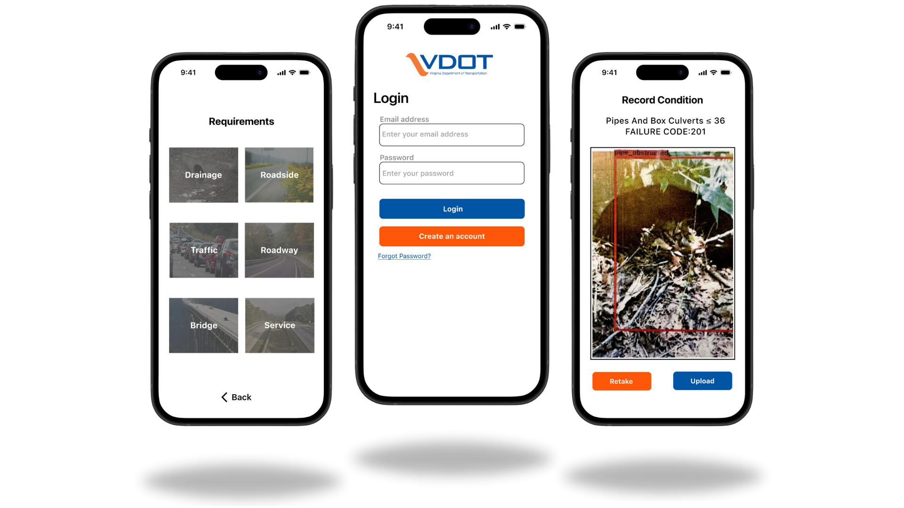

Field Inspection Interface

Management Analytics Interface

End-to-end UX design for VDOT's Maintenance Rating Program - from mobile field inspections to management analytics.
How cognitive load analysis and information hierarchy design improved field inspection workflows and operational decision-making across VDOT's Maintenance Rating Program.

Field inspectors work on highway shoulders in rain, heat, and glare. They wear gloves. Trucks pass at 60+ mph. They need to assess dozens of road features per inspection segment - rating pavement condition, drainage, signage, guardrails - and record data accurately in real time. Every rating decision feeds into district-level maintenance planning that determines where millions of dollars in repairs go. Meanwhile, district managers sitting in offices need to monitor inspection backlogs, identify urgent work, and coordinate field teams across regions - often pulling data from multiple disconnected systems.
This is not a consumer app. Errors here affect road safety and budget allocation. The interface either supports or undermines hundreds of micro-decisions made daily.
[PLACEHOLDER: Photo or illustration showing field inspection environment, inspector on roadside with tablet, highway setting]
Existing workflows were paper-based for field inspectors - slow, error-prone, and requiring double data entry when transferring to desktop systems. District managers lacked a centralized view of inspection status, relying on scattered spreadsheets and manual data aggregation to identify urgent work. There was no single system connecting what happened in the field to the decisions being made in the office.
VDOT needed an integrated solution: a mobile platform for real-time field data capture and a web dashboard for operational analytics, designed as one coherent system.
I approached this as two halves of one system, not two separate products.
[PLACEHOLDER: Process diagram or methodology framework visual, task analysis flow or cognitive walkthrough artifact]
Field inspectors do not browse - they execute. Every screen must answer: what do I need to rate, what are my options, and how do I move to the next item? I designed a stepped linear flow rather than a dashboard overview because inspectors process one road segment at a time. Presenting all segments simultaneously would force unnecessary context-switching and increase error risk.
What I chose: Large touch targets and high-contrast color coding across rating actions.
Why: Improved reliability in glare, wet screens, and gloved use while reducing miss-taps in safety-critical roadside conditions.
What I rejected: Smaller dense controls that displayed more options per screen but increased tap errors and slowed completion.
What I chose: Sequential segment-by-segment progression instead of hub-and-spoke navigation.
Why: Reduced context-switching during sequential inspections and supported faster recovery if interruptions occurred.
What I rejected: A central dashboard screen that exposed all segments at once, which increased cognitive overhead while inspectors were actively rating.
What I chose: Historical ratings and reference imagery behind on-demand expansion.
Why: Kept active rating screens visually focused while preserving context when users needed comparison data.
What I rejected: Persistent historical panels on every screen, which competed with current-task controls and increased visual clutter.
What I chose: Added a final confirmation pattern whenever required inputs were missing.
Why: Prevented accidental submissions observed during beta testing and reduced downstream correction work.
What I rejected: Silent auto-save behavior that let users move forward with unresolved fields and caused inconsistent data quality.
[PLACEHOLDER: Annotated mobile screen showing cognitive load callouts]
[PLACEHOLDER: Annotated mobile screen showing cognitive load callouts]
[PLACEHOLDER: Annotated mobile screen showing cognitive load callouts]
One key inspection screen was weighted so the highest-risk action receives immediate visual priority while contextual information remains accessible.
[PLACEHOLDER: Single mobile screen with visual hierarchy annotations, arrows or numbered callouts showing primary/secondary/tertiary zones]
District managers do not read dashboards - they scan them. I designed for a morning check-in workflow: the manager opens the dashboard and needs to know in under 10 seconds what is urgent, what is on track, and what needs attention. The visual hierarchy was built around this scanning behavior. Urgency indicators and backlog counts are visually dominant, while detailed breakdowns are accessible through progressive drill-down.
Choosing how to represent each metric was a deliberate process. I tested multiple approaches for backlog visualization - numerical counts, bar charts, heat maps - and landed on [describe what you chose] because [rationale]. Status indicators use a traffic light pattern (red/yellow/green) because it maps to an existing mental model district managers already use in verbal communication about priorities.
[PLACEHOLDER: Dashboard screen with annotations showing data visualization choices and scanning hierarchy]
Different users need different information hierarchies from the same data. District managers need high-level status and exception alerts. Operations coordinators need assignment queues and scheduling views. I designed role-based configurations that share a consistent navigation shell but surface different default views and data emphasis based on the user's primary workflow.
[PLACEHOLDER: Side-by-side comparison of role-based dashboard views showing different information emphasis]
The mobile app and dashboard are not separate products - data flows from the inspector's field entries directly into the manager's operational view. I designed this connection deliberately: real-time sync status indicators on the mobile app so inspectors know their data uploaded, and live-updating inspection feeds on the dashboard so managers see new data without manual refreshes. The system architecture informed interface decisions on both sides.
[PLACEHOLDER: Diagram showing data flow from mobile field app → backend → management dashboard, with UX touchpoints annotated at each stage]
I was the sole UX designer on a cross-functional Alpha Team: Product Manager, Solutions Architect, Software Engineer, and Engineering Intern.